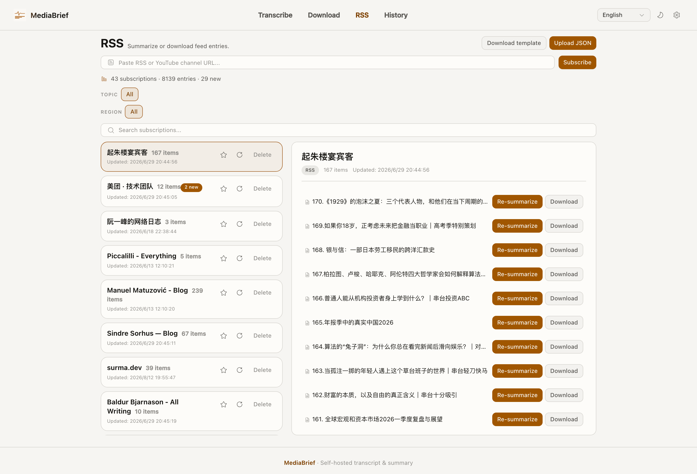
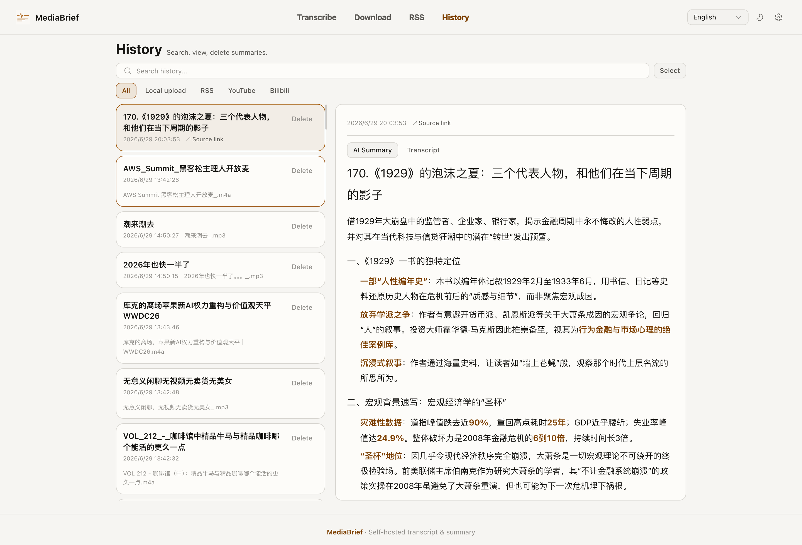

Paste a link. Read the brief on your Mac.
MediaBrief is a free Mac app for Apple Silicon. Paste a YouTube, Bilibili, or podcast link, or drop a local file. Subtitles first. Whisper only when captions are missing. The summary appears while the full transcript finishes. No account.

粘贴链接，在 Mac 上读摘要。
MediaBrief 是免费的 Apple Silicon Mac 应用。粘贴 YouTube、Bilibili 或播客链接，或拖入本地文件。先用字幕。没有字幕才走本机 Whisper。摘要先出来，全文还在整理。不用注册。
リンクを貼って、Mac 上で要約を読む。
MediaBrief は無料の Apple Silicon 向け Mac アプリです。YouTube、Bilibili、ポッドキャストのリンクを貼るか、ローカルファイルをドロップします。字幕優先。字幕がなければ本機の Whisper。要約が先に出ます。全文の整理は裏で続きます。アカウントは不要です。
링크를 붙이면, Mac에서 요약을 읽습니다.
MediaBrief는 무료 Apple Silicon Mac 앱입니다. YouTube, Bilibili, 팟캐스트 링크를 붙이거나 로컬 파일을 넣으세요. 자막 우선. 자막이 없을 때만 이 Mac의 Whisper. 요약이 먼저 나오고, 전문 정리는 뒤에서 이어집니다. 계정은 없습니다.
How it works
它怎么做
動き方
어떻게 동작하나요
- Subtitles first. Existing captions are used without downloading audio.
- Local transcription with mlx-whisper when captions are missing.
- The summary appears while the full transcript is still being cleaned up.
- History stays on this Mac. RSS, export, and optional bots are included.
- 先用字幕。有现成字幕时不下载音频。
- 没有字幕时用本机 mlx-whisper 转录。
- 摘要先出来，全文还在后台整理。
- 历史留在这台 Mac 上。RSS、导出和可选 Bot 都在应用里。
- 字幕優先。既存の字幕があれば音声をダウンロードしません。
- 字幕がない場合は本機の mlx-whisper で文字起こしします。
- 要約が先に出ます。全文の整理は裏で続きます。
- 履歴はこの Mac に残ります。RSS、書き出し、任意のボットもあります。
- 자막 우선. 있는 자막은 오디오를 받지 않고 사용합니다.
- 자막이 없으면 이 Mac의 mlx-whisper로 전사합니다.
- 요약이 먼저 나오고, 전문 정리는 백그라운드에서 이어집니다.
- 기록은 이 Mac에 남습니다. RSS, 보내기, 선택적 봇이 포함됩니다.


Install
安装
インストール
설치
Download the DMG, drag MediaBrief into Applications, then open it. First launch prepares the default transcription model in the background (about 1.6 GB). You do not install Python, FFmpeg, or Deno yourself.
下载 DMG，把 MediaBrief 拖进应用程序，然后打开。第一次启动会在后台准备默认转录模型（大约 1.6 GB）。不用自己装 Python、FFmpeg 或 Deno。
DMG をダウンロードし、MediaBrief をアプリケーションにドラッグして開きます。初回起動時に既定の文字起こしモデル（約 1.6 GB）をバックグラウンドで用意します。Python、FFmpeg、Deno を自分で入れる必要はありません。
DMG를 받아 MediaBrief를 응용 프로그램으로 끌어다 연 뒤 실행하세요. 첫 실행 때 기본 전사 모델(약 1.6 GB)을 백그라운드에서 준비합니다. Python, FFmpeg, Deno를 직접 설치할 필요는 없습니다.
Updates
更新
更新
업데이트
There is no silent updater. In the app, Check for Updates opens this page. Download a new DMG when you want a newer build. yt-dlp inside the app still refreshes itself on a weekly schedule.
没有静默更新。应用里的「检查更新」会打开这一页。想换新版本就下载新的 DMG。应用内的 yt-dlp 仍会按周自行刷新。
サイレント更新はありません。アプリの「更新を確認」はこのページを開きます。新しいビルドが必要なら新しい DMG をダウンロードしてください。アプリ内の yt-dlp は週次で自動更新されます。
조용히 자동 업데이트하지 않습니다. 앱의 "업데이트 확인"은 이 페이지를 엽니다. 새 빌드가 필요하면 새 DMG를 받으면 됩니다. 앱 안의 yt-dlp는 주 단위로 스스로 갱신됩니다.
Questions
Is MediaBrief free?
Yes. It is MIT licensed. There is no account, purchase, or trial.
What Mac do I need?
An Apple Silicon Mac. Intel Mac, Windows, and the Mac App Store are not in this release.
How is this different from Otter or a YouTube summary extension?
It runs on your Mac, takes 30+ sites plus local files, keeps a full transcript and history, and can subscribe to RSS or YouTube channels.
Does my video leave this computer?
The file stays on the Mac. Transcript text is sent to an AI API for cleanup and summary. Details are on the privacy page.
常见问题
MediaBrief 收费吗？
不收。MIT 许可。没有账号、购买或试用。
需要什么样的 Mac？
Apple Silicon Mac。Intel Mac、Windows 和 Mac App Store 不在这个版本里。
和 Otter 或「总结这个 YouTube」扩展有什么不同？
它跑在你的 Mac 上，支持 30+ 站点和本地文件，保留完整转录和历史，还可以订阅 RSS 或 YouTube 频道。
视频会离开这台电脑吗？
文件留在 Mac 上。转录文本会发给 AI 接口做整理和摘要。细节见隐私说明。
よくある質問
MediaBrief は無料ですか？
はい。MIT ライセンスです。アカウント、購入、試用はありません。
どの Mac が必要ですか？
Apple Silicon Mac です。Intel Mac、Windows、Mac App Store はこのリリースに含まれません。
Otter や YouTube 要約拡張と何が違いますか？
Mac 上で動き、30 以上のサイトとローカルファイルに対応し、全文と履歴を残し、RSS や YouTube チャンネルを購読できます。
動画はこのコンピュータから出ますか？
ファイルは Mac に残ります。文字起こし本文は整形と要約のために AI API へ送られます。詳細はプライバシーにあります。
자주 묻는 질문
MediaBrief는 무료인가요?
그렇습니다. MIT 라이선스입니다. 계정, 구매, 체험은 없습니다.
어떤 Mac이 필요한가요?
Apple Silicon Mac입니다. Intel Mac, Windows, Mac App Store는 이번 배포에 없습니다.
Otter나 YouTube 요약 확장과 무엇이 다른가요?
Mac에서 실행되고, 30개 이상 사이트와 로컬 파일을 받으며, 전체 전사와 기록을 남기고, RSS나 YouTube 채널을 구독할 수 있습니다.
영상이 이 컴퓨터를 떠나나요?
파일은 Mac에 남습니다. 전사 텍스트는 정리와 요약을 위해 AI API로 보내집니다. 자세한 내용은 개인정보 페이지에 있습니다.